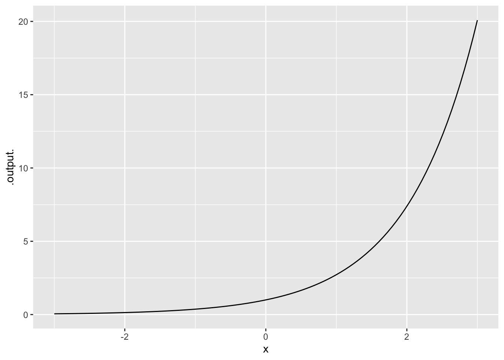

Chapter 10 Function inverses and “solving”
- [Fun-inverse] Understand the operation of “solving” a function and be able to translate this into “zero-finding.”
Very much in the spirit of naming common tasks, the process of turning an output from a function into the corresponding input using a computer program is called zero finding. As is often the case, computer programming often involves reformatting things to fit in a standard format. Here, the standard format is to find the input that corresponds to an output of zero. In reality, as in our snowplow problem, you might not care about an output zero. (The facilities manager in charge of zero miles of road is likely to be out of a job pretty soon!)  1200
1200
But output zero is just a format. You can easily re-write any function to create a new one where the output you want turns out to be zero. For instance, in our snowplow problem, instead of applying zero-finding to the function \(g(x) = 168 x\), we would construct another, related function \(h(x) \equiv g(x) - 400\). Finding a zero of \(h()\) gives us directly an input for \(g()\) corresponding to an output of 400.
10.1 Function inverses
- [Fun-3a2] Determine whether a function has an inverse. Know that exponential and logarithmic functions are inverses and that the inverse of a power-law function is another power-law function.
This may sound like a familiar word problem from your high-school algebra course:
You are a facilities manager for a small town. The town contains approximately 400 miles of road that must be plowed following a significant snowfall. How many plows must be used in order to complete the job in one day if the plows can travel at approximately 7 miles per hour when engaged? — Source
The task of answering such a question is often called solving a word problem.
You don’t need calculus to solve this problem, but insofar as the format is familiar to you, it might help to depict how it would be addressed as a modeling task and how to use the model created to guide the mathematical work of getting a numerical answer to the problem.
Modeling Phase: The objective is to create a function that represents snow plowing and that will let us answer the question about how much plowing activity is needed. Here’s a function that takes as input \(x\) a number of plows and provides as output the number of miles that can be serviced in a day. \[\mbox{miles_plowed}(x) \equiv 7 \times 24 \times x\] In reality, “miles plowed” depends on the amount of snow, the safe speed limit of the plows, the number of rest breaks needed by the drivers, how far the snowplow terminus is from the road system, how many cars are parked on the road and the available number of tow trucks, and the day of the week and the time of day. (Remember, there might be other traffic on the road. Plowing at rush hour is bound to be small! And slow down at night!) It seems that textbook “word problems” never mention such issues, having been written in a world where plowing snow is exactly the same as doing simple arithmetic.
Likely, we’re going to have to use the modeling cycle to end up with a genuinely useful model. Still, we have to start somewhere, so let’s start with \(7 \times 24 \times x\).
We can use this function to solve the problem: How many plows are needed to get the 400-miles of road serviced in 1 day? It’s a matter of choosing a suitable method for applying the function to guide us to the answer. 1210
One simple method, which sometimes is called guess and check is to propose some answers and see what happens. Being experts in snow plowing, we know that you can’t have negative or fractional plows, so our guesses for \(x\) will be integers. Let’s do this systematically:
| Number of plows \(x\) | Miles plowed in a day |
|---|---|
| 1 | \(7 \times 24 \times 1 = 168\) |
| 2 | \(7 \times 24 \times 2 = 336\) |
| 3 | \(7 \times 24 \times 3 = 504\) |
| 4 | \(7 \times 24 \times 4 = 672\) |
| \(\vdots\) | … and so on. |
We really don’t need all the scratch work crowding up the table, so let’s streamline it, keeping the essentials:
| input \(x\) | output \(\mbox{miles_plowed}(x)\) |
|---|---|
| 1 | 168 |
| 2 | 336 |
| 3 | 504 |
| 4 | 672 |
The domain of the miles_plowed() function is \(x = 0, 1, 2, 3, \ldots\), so our table covers only a bit of the domain.
Miles_plowed() might be a genius function, but in using it we have to keep in mind that we don’t actually know the input. What we do know is something in the form of the output: 400 miles. The mathematical operation of solving consists of looking up what we do know in the output column of the table, then reading off the corresponding input as our answer. Since 400 doesn’t appear in the output column, we’ll look for an interval that includes 400. Of course, that’s the interval from 336 to 504. So the answer will be something bigger than \(x=2\) but doesn’t need to be any larger than \(x=3\). You’ve been in the facilities management business for many years, so you know to choose the answer \(x=3\).
If you have a graph of a function, it can be easy to calculate what the input should be for a given output. Just reverse the finger action, looking up the output on the vertical axis, tracing horizontally to the function graph, then reading off the result from the input axis.
Now let’s write the problem using math notation rather than a table. We’re looking for a value of \(x\) such that \[\mbox{miles_plowed}(x) = 400\] This is an equation as opposed to a function definition which we write with \(\equiv\) rather than \(=\). The point of writing equations is often to signal to us that the task is to “solve for \(x\).”
An algebraic solution relies on replacing miles_plowed(\(x\)) with the function’s formula and then re-arranging numbers and possibly other symbols until we have an equation of the form \(x = \ldots\). Here, that’s easy:
\[7 \times 24 \times x = 400\ \ \implies\ \ x = 400/(7\times 24)\]
Do some arithmetic and we find \(x = 2.381\). Apply some common sense and we translate this into “three plows.”
An industrious facilities manager might go further. “Today there is 400 miles of road. But next year there will be more, although I don’t yet know the exact number. While I’m doing all this math work, I’ll write up a memo so that next year, when I know how much road there will be, I can just to some arithmetic.” This is a good idea, although a mathematician might prefer the word “function” to “memo [to guide] arithmetic.” 1220
You likely learned how to set up and solve this memo-writing function. The key is to replace 400 with a symbol standing for the number of miles of road. We’ll use \(M\). Then you do the re-arrangement with \(M\) in place of 400.
\[168 x = M\ \ \implies\ \ x = M/168\]
All that remains is to give a more informative name in place of \(x\) and to write it as a proper function: \(n_{plows}(M) \equiv M/168\).
This process of starting with a function like \(\mbox{miles_plowed(x)}\) and transforming it into a function in a more convenient format for the task at hand \(n_{plows}(M)\) is called inverting the function.
High-school algebra emphasizes techniques for inverting functions by moving symbols around. This is great when it can be done, but it’s often impossible in real science and engineering problems. In such cases we use a very powerful, general-purpose method, that is, guess and check.
Another common strategy for inverting functions that are beyond our reach algebraically is to rely on a specialist to develop the inverse function, give it a name, write it down a formula in mathematical notation or, sometimes more usefully, write a computer program that implements the inverse function’s algorithm. With this strategy, all that’s needed to invert a function is to know the name or formula of the function’s inverse. Here’s a table of such names and formulas, most of which is likely familiar to you.
| function | inverse function |
|---|---|
| Exponential: \(e^x\) | Logarithm: \(\ln(x)\) |
| Exponential: \(2^x\) | Log base 2: \(\log_2(x)\) |
| Exponential: \(10^x\) | Log base 10: \(\log_{10}(x)\). |
| Power law: \(x^2\) | Square root: \(\sqrt{x}\) |
| Power law: \(x^{-1}\) | Power law: \(x^{-1}\) |
| Trig: \(\sin(x)\) | Trig: \(\arcsin(x)\) |
| Trig: \(\tan(x)\) | Trig: \(\arctan(x)\) |
You can of course read this table either from left to right or from right to left. For instance, the inverse of \(\ln(x)\) is \(e^x\).
As you know, for a function \(g(x)\), the set of valid values of \(x\) is called the domain of the function. The set of possible outputs from the function is called the range of the function. The inverse function to \(g()\) has a domain which is the range of \(g()\) and a range which is the domain of \(g()\).
Sometimes the notation \(g^{-1}(x)\) is used for "the inverse function of \(g()\). This is potentially confusing, since \(g^{-1}(x)\) might reasonable be interpretted as \(1/g(x)\) and, in general, those two things are not equal.
Straight-line (with non-zero slope), exponential (\(e^{kt}\) where \(k\neq 0\)), and logarithm functions aways have inverse functions. For power-law and sinusoid functions, there can be several (or many) different inverse functions. We’ll get to this when we need to. 1230
There’s an easy graphical test for whether there is a unique inverse function or not. Draw the graph, then see if any horizontal line touches the graph of the function in more than one place. If so, there is no unique inverse function.


10.2 Exercises
Exercise 10.3: RDWKW
Some years ago, you learned to calculate the slope of a straight-line function. If you had a graph, you would mark out a run and the corresponding rise, then compute rise/run. If you had a formula definition, e.g. \(f(x) \equiv 3 - 4 x\), you would simply read the slope off as the coefficient on the function input. Here, the input is named \(x\) and its coefficient in the formula is \(-4\).
In this question, we ask you to estimate the slope from a graph of the function. But the function is exponential, so not a straight line.
A fundamental idea in calculus is that even a function with a curved graph, if you zoom in closely around a given point, will look like a straight line. And you know how to calculate the slope of a straight line.
When the graph is curved, the slope will be different at different points along the graph. So there’s not a single slope for the function. Still, we can talk about the “slope at a point.”
One way to specify a point on a function’s graph is to give the horizontal coordinate: the input to the function. But here we’re going to give you the output of the function.
Estimate the slope of the exponential function \(g(x) \equiv e^x\) at several inputs, which we’ll call \(x_1\), \(x_2\), \(x_3\) and \(x_4\). We won’t give you numerical values for the \(x_i\) points, but we will tell you the output of the function at each of those inputs. the values of \(x\) where:
- \(g(x_1) = 1\)
- \(g(x_2) = 5\)
- \(g(x_3) = 10\)
- \(g(x_4) = 0.1\)
The code sandbox below already contains an R command to plot out the mathematical exponential function over the domain \(-3 \leq x \leq 3\). For each of (a)-(d), modify the command to zoom in on the domain around around the appropriate value of \(x_i\). Then calculate the slope of the curve at that \(x_i\).
slice_plot(exp(x) ~ x, domain(x = c(-3, 3)))
Question A Using your answers for the slope at the points given in (a)-(d), choose the best answer to this question: What is the pattern in the slope as \(x\) varies?
- The slope at each value \(x_i\) is the same as \(e^{x_i}\). ✓ This property of the exponential function becomes important when describing a wide range of phenomena, from nuclear isotope decay to population growth.
- The slope at each value \(x_i\) is the same as \(x_i\). ☹︎ That would being saying the slope at \(x_3\) is \(\approx 2.30\). Is that what you got?
- The slope at each value of \(x_i\) is the same as \(x_i^2\). ☹︎ That would being saying the slope at the \(x_3\) is \(\approx 5.30\). Is that what you got?
- The slope at each value of \(x\) is the same as \(\sqrt{x}.\) ☹︎ That would being saying the slope at the \(x_i\) is \(\approx 1.52\). Is that what you got?
Now that you’ve found the answer and seen how to specify the domain on a slice plot, here’s a technique that can make your work a bit easier. Add this to the command that plots \(e^x\) on the domain \(-3 \leq x \leq 3\)
%>% plotly::ggplotly()Make sure the %>% is on the same line as the slice_plot() expression itself. Run the amended command then hover the cursor over the graph.
Reflection: One goal of this problem is to introduce you to a way of writing about functions that is somewhat different than you may have seen before.
- Instead of using the letter \(y\)—as in \(y = mx + b\), we give each function a name and, in the parentheses after the name, list the inputs to the function. For instance, we use \(f(x)\) and \(g(x)\) in this problem.
- We are not using the equal sign (\(=\)) to give a name to the function; we use \(\equiv\). As you know, \(=\) means “equality.” But \(h(x) \equiv x^2\) describes a definition: “we define \(h\) to be the name of a function of \(x\) with the formula \(x^2\).” Definitions are different from equations. Equations have an important role in mathematics, so it’s worth not confusing them with definitions.
- We will often use letters from the end of the alphabet—\(x\), \(y\), \(z\), \(t\), \(u\), \(v\), \(w\)—as the names of inputs to functions. It will be important for us to give names to inputs because we will often deal with functions with more than one input and we’ll need to keep straight which one stands for what.
- A function is a kind of machine that takes inputs and produces outputs. Similarly, a printer is a machine that takes several inputs—paper, ink, electricity, PDF file—and produces the familiar kind of output. Printers are designed to have different places for the different inputs, so you can’t mistake one for the other. With mathematical functions, all we have for this purpose is the different names for the inputs.
- The input slot on a printer is often called the “paper tray.” You would never confuse the paper tray with paper itself. Inputs to function are like the paper tray. When we put a particular value into the input slot \(x\) of a function, we will often call the particular value something like \(x_0\) or \(x^\star\), or \(x_3\). When you see something like \(x_0\), remember that it is a particular piece of paper, not the input tray for paper. We’ll even sometimes give you the output from the function—as we did here with the exponential function—and ask you to figure out the particular input that corresponds to that output. This is like asking, “Find a piece of paper that, once it’s printed on, the ink won’t show through to the other side.”